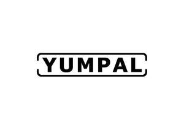

Trade Mark Journal No.2025/022 30 May 2025
UK00004203004 13 May 2025 (21)

- Class 21
- Boxes for candies; Bento boxes; Boxes for biscuits; Boxes for sweets; Candy boxes; Boxes for sweetmeats; Soap boxes; Boxes (Soap -); Boxes of glass; Lunch boxes; Sandwich boxes; Bread boxes; Boxes of ceramics; Boxes of porcelain; Picnic boxes; Enamelled boxes; Boxes of earthenware; Enamel boxes; Cool boxes; Insulated mugs; Coffee mugs; Insulated bottles [flasks]; Vacuum bottles [insulated flasks]; Vacuum mugs; Heat insulated containers for drinks; Insulated lunch bags; Insulated flasks; Thermal insulated wrap for cans to keep the contents cold or hot; Cups and mugs; Glass mugs; Insulating sleeve holder for beverage cups; Mugs; Insulated vacuum bottles; Thermal insulated tote bags for food or beverages; Beverages (Heat insulated containers for -); Coffee cups; Vacuum coffee bean containers; Mug cosies; Tea canisters; Bottle coolers; Vacuum flask cookers; Insulating sleeve holders for beverage cans; Cup lids; Beer mugs; Tea cups; Glass flasks [containers]; Vacuum flasks for holding drinks; Ceramic mugs; Beverage coolers [containers]; Thermal insulated containers for food or beverage; Coffee pots; Milk jugs; Insulating flasks; Thermal insulated bags for food or beverages; Sippy cups; Insulated containers for beverage cans, for domestic use; Thermal insulated containers for food or beverages; Coffee pots [non-electric]; Non-electric coffee pots; Bottle coolers [receptacles]; Heat insulated containers; Carafes; Earthenware mugs; Glass carafes; Neoprene zippered bottle holders; Mug racks; Non-electric coffee drippers for brewing coffee; Reusable stainless steel water bottles; Heat-insulated containers for beverages; Mug sleeves; Reusable stainless steel water bottles sold empty; Glass cups; Insulated flasks for household use; Coolers [ice pails]; Aluminum water bottles, empty; Plastic water bottles [empty]; Glass flasks; Porcelain mugs; Mugs of porcelain; Tea kettles, non-electric; Tea kettles [non-electric]; Bottle buckets; Coffee percolators, non-electric; Non-electric coffee percolators; Percolators (Coffee -), non-electric; Drinking mugs made of porcelain; Thermally insulated flasks for household use; Portable beverage coolers; Drinks containers; Tea bag rests; Tea pots; Beer jugs; Mugs made of plastic; Reusable plastic water bottles sold empty; Empty water bottles for bicycles; Plastic water bottles; Coffee stirrers; Insulated glass holders; Vacuum jugs (Non-electric -); Drinking flasks; Coolers [non-electric containers]; Portable beverage container holders; China mugs; Mugs of china; Syrup jugs; Plates; Glass plates; Table plates; Plastic plates [dishes]; Dessert plates; Plastic plates; Decorative plates; Commemorative plates; Plates (Paper -); Paper plates; Collector plates; Cake plates; Compostable plates; Biodegradable plates; Insulated lids for plates and dishes; Disposable table plates; Table plates (Disposable -); Plate glass for cars; Plates for hors d'oeuvre; Plate glass being unworked; Dining plates of silica gel; Lunch boxes made of plastic; Lunch boxes made of metal; Lunch pails; Plastic juice box holders; Juice box holders made of plastic; Meal trays; Pizza tray stands; Tissue box covers; Bottles; Bottle pourers; Wine bottle cradles; Gourds (Bottle -); Bottle openers; Glass bottles; Bottle brushes; Bottle cradles; Water bottles; Drinking bottles; Squeeze bottle [empty]; Glass stoppers for bottles; Feeding bottle brushes; Bottle stands; Plastic bottles; Reusable bottles; Vacuum bottles; Aluminum water bottles; Squeeze bottles, empty; Non-electric bottle openers; Bottle cleaning brushes; Refrigerating bottles; Bottles (Refrigerating -); Water bottles sold empty; Wine jugs; Covers for water bottles; Brushes for feeding bottles; Cleaning brushes for feeding bottle teats; Biodegradable bottles; Shaker bottles sold empty; Drinking bottles for sports; Water bottles for bicycles; Stands for bottles; Smart medicine bottles, empty; Bottles, sold empty; Brushes; Dusting brushes; Pastry brushes; Brushes for cleaning; Pot cleaning brushes; Fireplace brushes; Dish brushes; Tub brushes; Lavatory brush stands; Bathtub brushes; Brushes (except paintbrushes); Carpet-cleaning brushes; Brushes (Dishwashing -); Lavatory brushes; Floor brushes; Lamp-glass brushes; Shoe brushes; Horse brushes of wire; Cleaning brushes for teapot spouts; Clothes brushes; Cleaning brushes for feeding bottles; Pottery; Ceramic tableware; Mugs made of ceramic materials; Tableware of porcelain; Plaques of pottery; Porcelain ware; Porcelain; Dinnerware of porcelain; Crockery made of porcelain; Glass tableware; Japanese nests of food boxes (jubako); Japanese nests of food boxes [jubako]; Ceramic tissue box covers; Sponges; Scrub sponges; Cleaning sponges; Bath sponges; Make-up sponges; Squeegee sponges; Cosmetic sponges; Kitchen sponges; Scouring sponges; Body sponges; Natural sea sponges; Sponges for toilet use; Sponge holders; Facial cleansing sponges; Sponges for household purposes; Sponges for cleaning medical instruments; Microdermabrasion sponges for cosmetic use; Makeup sponge holders; Abrasive sponges for kitchen [cleaning] use; Artificial sponges for household purposes; Sponges for applying body powder; Facial sponges for applying make-up; Fitted sponge bags; Dishwashing brushes; Scrubbing brushes; Soap dispensing dish brushes; Toilet brushes; Brushes for cleaning babies' feeding bottles; Bath brushes; Brushes for cleaning tanks and containers; Washing brushes; Mushroom brushes; Dispensers for paper towels; Brushes, except paintbrushes; Cake brushes; Interdental brushes for cleaning the teeth; Shampoo brushes; Toothpaste squeezers; Toilet brush holders; Tongue cleaning brushes; Denture brushes; Toilet and bathroom cleaning utensils ; Facial cleansing brushes, electric and non-electric; Water flossers; Toilet brush sets; Cleaning brushes; Tongue brushes; Brushes for personal hygiene; Dental floss [floss for dental purposes]; Cosmetic and toilet utensils; Water closet brush holders; Brushes for footwear; Footwear (Brushes for -); Shaving brush stands; Graters [non-electric household utensils]; Cloths for cleaning; Cleaning cloth; Cleaning rags; Rags for cleaning; Cleaning combs; Pads for cleaning; Cleaning pads; Cleaning cotton; Cleaning tow; Cleaning leathers; Cleaning articles; Microfiber cloths for cleaning; Cloths for cleaning purposes; Brooms for cleaning purposes; Brushes (except paint brushes); Mopping brushes; Scraping brushes; Handles for brushes; Cutlery trays; Bone china tableware [other than cutlery]; Aluminium moulds [kitchen utensils]; Moulds [kitchen utensils]; Kitchen utensils; Cookware and tableware, except forks, knives and spoons; Tenderizers [kitchen utensils]; Spatulas [kitchen utensils]; Kitchen utensils of silicon; Crockery; Molds [kitchen utensils]; Egg separators [kitchen utensils]; Tableware, other than knives, forks and spoons; Trivets [table utensils]; Mixing spoons [kitchen utensils]; Tableware, except forks, knives and spoons; Tortilla presses, non-electric [kitchen utensils]; Dishes [household utensils]; Basting spoons [cooking utensils]; Cookware, except forks, knives and spoons; Tableware, cookware and containers; Dishware; Cooking utensils; Household or kitchen utensils; Baking utensils; Turners (kitchen utensil); Griddles [cooking utensils]; Kitchen utensils, not of precious metal; Tableware; Non-electric griddles [cooking utensils]; Griddles [non-electric cooking utensils]; Grills [cooking utensils]; Cooking utensils, non-electric; Presses (Garlic -) [kitchen utensils]; Garlic presses [kitchen utensils]; Wire baskets [cooking utensils]; Cosmetic utensils; Sifters [household utensils]; Sieves [household utensils]; Cookware [pots and pans]; Cutlery rests; Graters [household utensils]; Saucepans (Earthenware -); Earthenware saucepans; Cooking pots and pans [non-electric]; Non-electric cooking pots and pans; Picnic crockery; Dishcloths for washing dishes; Oven-to-table tableware; Coasters (tableware); Kitchen moulds; Cinder sifters [household utensils]; Household utensils; Glass dishes; Scourers for saucepans; Aluminium cookware; Baking dishes made of porcelain; Kitchen sieves.
YUMPAL LTD